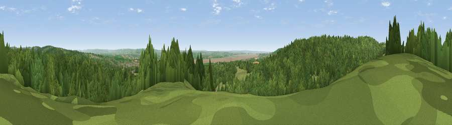

Viewpoint near Aylburton
#15281 in England · top 26% of its area beats it · near AylburtonWhere it is
The exact computed spot (SO 60975 03725). Click the marker for map links.
The view, rendered

A 360° render of this exact spot computed from the terrain model, tree cover and land cover — summer colours, afternoon light, calibrated against photographs of famous viewpoints. Real trees, hedges and buildings will differ in detail.
The panorama
Grey silhouette: terrain skyline in each direction (720 bearings, Earth curvature and refraction included). Dashed green: skyline with trees (+15 m) and buildings (+8 m) as obstacles. Blue strip: how far the ground is visible on each bearing.
Where the view opens
Wedge length = distance to the farthest visible ground on that bearing (vegetation-aware). Rings at 10, 25 and 50 km.
What fills the view
82% woodland · 13% grassland · 2% cropland · 2% water · 1% built-up
Angular shares of the visible panorama (visual magnitude), not map area. Landscape diversity 0.28 (0–1 Shannon).
Key numbers
More beautiful places nearby
The staircase of upgrades: each row has a higher view potential than everything closer. Driving times are estimates from straight-line distance, calibrated against real road routing — check an actual route before setting out.
| Place | Direction | Drive | Score |
|---|---|---|---|
| Viewpoint near Aylburton | SW · 1 km | ~3 min | 68.8 |
| Viewpoint near Hewelsfield | WSW · 4 km | ~9 min | 69.4 |
| Viewpoint near Yorkley | NE · 4 km | ~10 min | 70.9 |
| Buck Stone | NW · 11 km | ~21 min | 71.0 |
| Viewpoint near Littledean | NE · 12 km | ~22 min | 73.8 |
| Viewpoint near Stinchcombe | ESE · 14 km | ~25 min | 78.7 |
| Viewpoint near Stinchcombe | ESE · 14 km | ~25 min | 79.4 |
| Viewpoint near Stinchcombe | ESE · 14 km | ~25 min | 80.5 |
51.73087, -2.56646 · source: screening · position refined by local search. Computed location — check access rights before visiting.